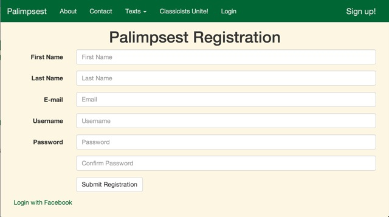

{% load staticfiles %}
Palimpsest
{% include "navbar_base.html" %}
Salve Amice!
Palimpsest is a web-based interface for interacting with ancient texts. This page provides an
overview of how to use tools and features.
Selecting a Text
To begin your session, select a text from the dropdown menu. Palimpsest currently supports Vergil's Aeneid,
Books 1 to 4 and Caesar's Gallic Wars.
Query Lines
Selecting a text brings you to the text view page. All of the tools can be accessed from this page, using the Tool Box
on the lefthand side.
Specific lines of text can be viewed by entering a range of line numbers in the query box at the top of the Tool Box.
Vocab Lookup
To look up a vocab word, first click "Vocab" under "Tools" on the lefthand panel. When the Vocab tool is active,
"Vocab" will turn red. Then, when you mouse over words on the page. they will highlight in red. Clicking on a word
will open a pop-up with a dictionary lookup of the word. The pop-up will stay open until closed, either by clicking on the
"x" in the righthand corner or by clicking on the word again. To turn off the vocab function, simply click "Vocab" again.
User Accounts
For full functionality, you must create a user account. You can select "Login" from the bar at the top of
the screen if you already have an account, or you can select "Sign up!" from the top right of the screen.
You can mannually enter user information, or you can choose to sign up through a Facebook account. You can
view other Palimpsest users and their basic information by clicking "Classists Unite!" at the top of the screen.

Views
The different views in the lefthand pannel allow you to view the text in different ways. "View Translation" displays
the original text and an English translation side-by-side. Note that the English overshoots the Latin, so that there may
be more English displayed than that which corresponds exactly to the Latin. "View Comments" allows you to view the text
side-by-side with user comments. Clicking on this option will open a modal, where you can choose to view Public Comments,
Private Comments, or Public and Private Comments (see below for more information on comments).
View Commentary
The "View Commentary" option allows you to view the Latin text side-by-side with a Google Book. Selecting this option
opens a modal where you can search for Google Books. The search results will only show at most the top ten results from your
search. Only books that are embeddable and have previews will be displayed. Click on the book you wish to view, and it will
load beside the text.
Add Comments
Like the Vocab Tool, the Add Comment Tool is toggleable. If you click on it, it will turn red. Then, when you mouse over
line numbers, they will also turn red and you can click on them to add a comment.
The "Add Comment" window gives you a
field to type your comment for the selected line number. You can also choose to make the comment Private, Public, or Anonymous Public. A Private comment is only visible to you. A Public comment is accessible to all Palimpsest account holders and your username is displayed beside the comment when it is viewed. An Anonymous Public comment is accessible to all
Palimpsest account holders, but your username is not displayed with the comment.
Edit Comments
The option to edit comments is only available from the "View User Comments" view. Then, it appears as a tool in the
left hand pannel. As with the other tools, this option is toggleable. Selecting it will cause it to turn red. You
can then click on the line number next to a comment to edit the comment. You can only edit comments that you wrote (public,
private, or anonymous). The Edit Comment window will display your comment's current contents and settings. You can change
these values and click "Save Changes", or you can click "Delete". "Delete" will immediately and irrevocably delete a comment